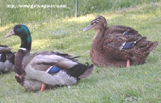
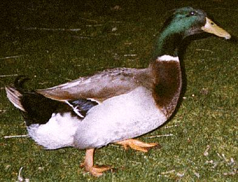

ANATRA (ROUEN)
|

 |
Ambiente/Habitat | Foreste Temperate, Laghi e Paludi |
| Frequenza | Common | |
| Organizzazione | Piccoli Gruppi | |
| Periodo di Attività | Giorno | |
| Dieta | Onnivoro | |
| Intelligenza | Animal Intelligence (1) | |
| Punti Combattimento | Nessuno | |
| Tesoro | Nessuno | |
| Allineamento Dominante | Neutrale | |
| Numero di Apparizione | 2d3 | |
| Classe Armatura | 7 [10 base, 1 corazza, 2 destrezza] | |
| Movimento | 6 esagoni /Nuotare 6 esagoni /Nuotare 12 esagoni | |
| Dadi Vita | 1/2 | |
| Thac0 | 20 | |
| Numero di Attacchi | Becco | |
| Danni | 1d2 (Punta) | |
| Poteri Offensivi | Nessuno; | |
| Poteri Difensivi | Nessuno; | |
| Poteri Generici | Evasione Inferiore; | |
| Vulnerabilità | Nessuna; | |
| Resistenza alla Magia | Nessuna; | |
| Sensi | Vista Comune; | |
| Dimensioni | Small (90 cm. lunghezza) | |
| Morale | Unreliable (3) | |
| Valore in Punti Esperienza | 10 |
| MODIFICATORI AI TIRI SALVEZZA | |||||||||||||||||||||||
| COR | 0 | 52 | ENV | 0 | 59 | MAG | 0 | 65 | MAL | 0 | 51 | MEN | 0 | 63 | RIF | +5 | 50 | ROB | 0 | 61 | VEL | 0 | 55 |
Descrizione
Portamento orizzontale. Notevoli dimensioni. La morfologia è molto simile al Germano reale. Il maschio può superare i 4 kg e la lunghezza, dalla testa alla coda, è di circa 90 cm.
Combat
L'anatra non combatte e cerca di volare via al primo pericolo. Se costretta becca con violenza il nemico per farlo allontanare.
EVASIONE INFERIORE (Least Special Ability): Questa creatura è in grado di spostarsi così agilmente da poter evadere gli attacchi alle spalle dei propri nemici. In particolare, questa creatura potrà utilizzare la competenza Evasive Fighting disponendo di una prova complessiva pari a 10.
Habitat/Society
Praticamente onnivora, si ciba di tutto ciò che riesce a trovare immergendo il becco sott'acqua o razzolando sul terreno. In cattività non presenta particolari esigenze alimentari. Grazie alla sua docilità e adattabilità è diventata il prototipo dell'anatra domestica. Poco chiassosa: il suono del maschio è più debole di quello della femmina. Le coppie si formano nel tardo autunno e si riproducono nella primavera successiva. Le femmine depongono da 9 a 15 uova di colore tendente al verde in nidi nascosti in anfratti del terreno e al coperto, tra rocce o cespugli. Le femmine sono dotate di spiccato senso materno.
Ecology
Sono moltissime le specie di anatre allevate in cattività e, tra queste, molte sono state addomesticate. Il loro impiego può essere sia da reddito (carne, uova, fegato), da caccia e ornamentale. Un'anatra uccisa può essere venduta come cacciagione prelibata al costo di 3-5 s.p..